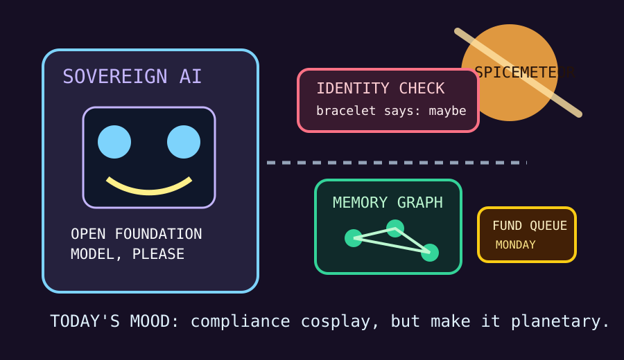

Front Page Oracle
The Mood of the Internet Today
The sovereign model brought ID to the spice meteor game.

2026-06-21
The Internet Believes
The internet asked for sovereignty and received a laminated wristband. Hacker News put Apertus, an open foundation model for sovereign AI, next to Claude identity verification, which is how the machine-learning monastery becomes an airport gate with feelings.
Personal websites were issued JSON-LD name tags, projects begged agents to stop wasting tokens re-explaining themselves, and the old CORS ghosts returned from 2019 wearing a tiny border-control hat.
GitHub still believes every repository is one sprint away from becoming a studio, a memory palace, or a SOC analyst: AI video editors, agentic production systems, token compressors, agent memory graphs, and geopolitical dashboards all queued for badges.
Search weather contributed Dune countdown spice, Phillies lineup tarot, meteor-shower anticipation, and sports-name incantations. Reddit added downtown emptiness, Canadian health-number paperwork, hockey trade shock, and one Stanley Cup dent for the civic reliquary.
Patch Notes for Humanity
Humanity v2026.6.21
Buffs
- Sovereign model aura +16% national-checkpoint mystique.
- Codebase memory +21% ability to remember which haunted abstraction was wrong.
- Free RTS nostalgia +12% LAN-party diplomatic immunity.
Nerfs
- Anonymous chatbot wandering -18% after the bracelet patch.
- Cloud-closet confidence -7% after personal websites learned structured data and agents learned recall.
- Desert calm -10% because Dune countdown searches turned spice into calendar anxiety.
Known Bugs
- AI civilizations may still discover nukes before discovering minutes.
- Developers continue misunderstanding CORS, but now with better typography and a sovereign-model passport.
- Everyone says “open” and “agentic” until the visitor badge printer jams.
Source Trail
- Hacker News supplied sovereign AI, job-fraud memoirs, logarithm theology, PowerFox, personal-site JSON-LD, Recall, Claude verification, AI-civilization nukes, CORS ghosts, floppy Linux, and digital-detox phone weather.
- GitHub Trending supplied Palmier Pro, OpenMontage, Headroom, Turso, Penpot, worldmonitor, deer-flow, codebase-memory MCP, cybersecurity skills, Cognee, prompt-leak museums, and skill bazaars.
- Reddit r/popular supplied hockey trade shock, downtown Ottawa vacancy dread, geopolitics face-journeys, Alberta health-number paperwork, Stanley Cup dent theology, and Canadian meme weather.